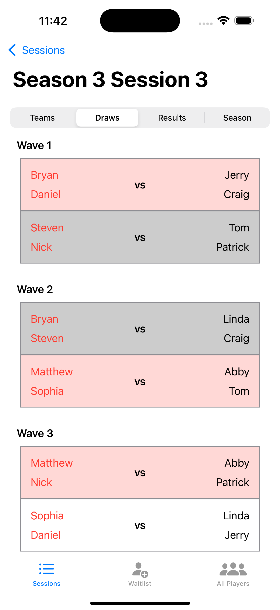
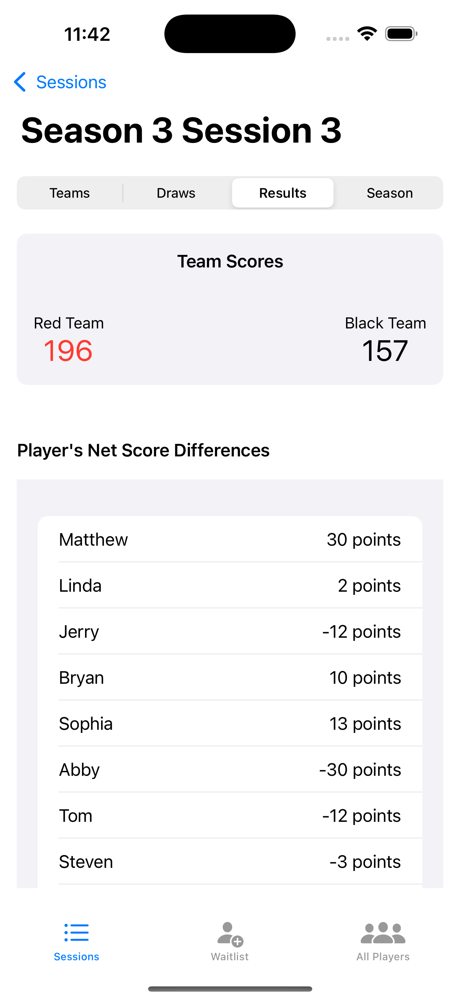
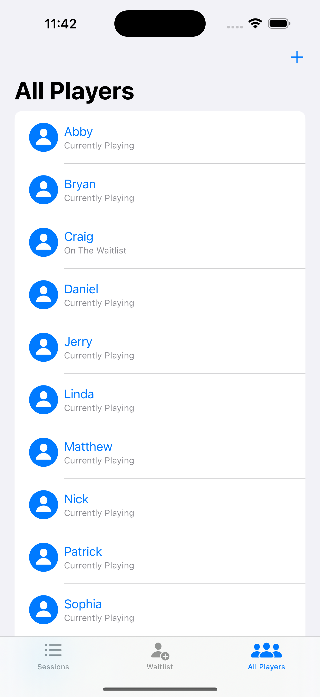

RallyPro
RallyPro is a powerful tournament management app designed for badminton organizers. It streamlines the process of generating matches, managing player attendance, and tracking results with ease.

Key Features
- Match Automation: Generates matches based on player availability.
- Attendance Management: Tracks attendees and waitlisted players.
- Score Tracking: Records match results and calculates individual stats.
- Performance Analytics: Offers insights into player performance.
- User-Friendly Interface: Designed for tournament administrators.
How It Works
Administrators can create tournaments, add players, and generate matches with just a few clicks. The app simplifies result recording and provides detailed analytics on player stats and match outcomes.
App Preview


